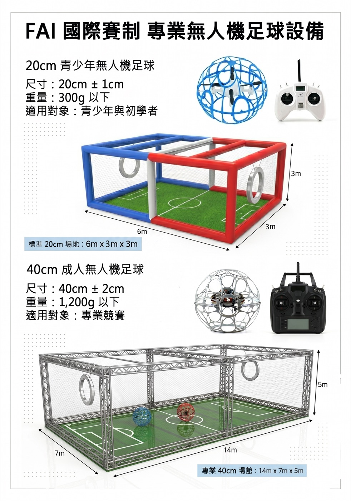
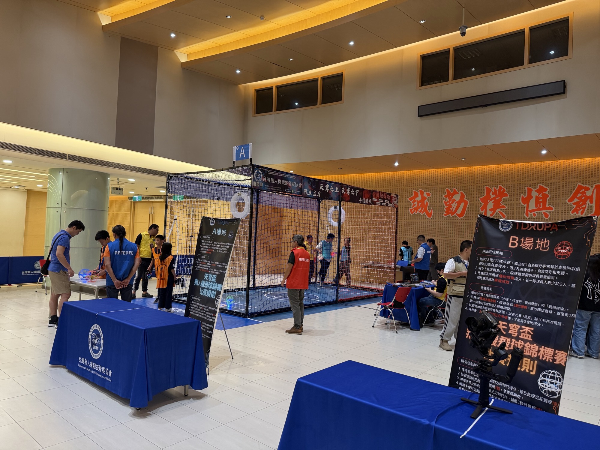

把足球搬到空中：兩隊選手遙控包在球形護籠裡的無人機，由「前鋒」穿越對方的空中球門環得分。結合飛行技術、團隊戰術與 STEM 教育的新興運動。 Soccer, taken airborne. Two teams pilot drones sealed inside spherical cages, and only the Striker can score by flying through the opponent's hanging goal ring. A new sport that blends piloting skill, team tactics and STEM learning.
無人機足球是結合遙控無人機飛行與足球的團隊運動。兩隊在封閉的防護籠內對戰，每位選手操控一顆「無人機球」，目標是讓己方前鋒整顆穿過對方的球門環。 Drone soccer is a team sport that combines radio-controlled drone flying with soccer. Two teams face off inside a protective cage; each player flies one "drone ball", and the goal is to get your Striker completely through the opponent's goal ring.
一場比賽分三局、每局三分鐘，先拿下兩局的隊伍獲勝。無人機外層包覆塑膠或複合材料的球形護籠，允許碰撞攔截，因此比賽節奏快、身體對抗感強，很像空中的冰上曲棍球。 A match is three 3-minute sets; the first team to win two sets wins. Each drone is wrapped in a plastic or composite spherical cage, so body-checking and blocking are part of the game — fast, physical, and a lot like ice hockey in mid-air.
依據：FAI 運動規章 F9 卷 2026 年版 v1.0，B 章前言、B.4.1Source: FAI Sporting Code Vol. F9, 2026 ed. v1.0, Part B preamble & B.4.1
全隊唯一可以得分的人。可以守在自己的球門環裡防守。球的後燈會用對方隊色，並可掛彩帶方便辨識。The only player who can score. May also sit in their own goal ring to defend. Their rear light uses the opposing team's colour, and a ribbon may hang beneath for visibility.
幫前鋒開路、卡位、攔截對方前鋒。穿過對方球門不算分；若為了防守停在自己的球門環內，會被判罰球。Clear a path for the Striker, block and intercept the opposing Striker. Flying through the opponent's ring doesn't count; staying inside your own ring to defend concedes a penalty shot.
由場上選手之一擔任，是與裁判溝通的發言人；前鋒墜機時可喊暫停並更換前鋒（每局一次）。One of the active players; the team's spokesperson with the referees. If the Striker goes down, the captain may call a time-out and appoint a new Striker (once per set).
不到十年，無人機足球從韓國一座城市的創意，發展成有國際組織、統一規則與世界錦標賽的運動，並把奧運當作長期目標。In under a decade, drone soccer has grown from one Korean city's idea into a sport with international governing bodies, unified rules and world championships — with the Olympics as a long-term ambition.
無人機足球在韓國全州市出現，全州也因此被稱為「無人機足球之城」。Drone soccer emerges in Jeonju, which now calls itself the "city of drone soccer".
全州的 CAMTIC 技術研究院完成比賽規則與無人機球設計。之後韓國國內發展到約 2,500 支隊伍、每年 30 場以上比賽。Jeonju's CAMTIC Institute of Technology finalises the rules and ball design. Korea has since grown to roughly 2,500 teams and 30+ competitions a year.
無人機足球在美國拉斯維加斯 CES 展示，推廣者公開表示希望有朝一日進入奧運。Drone soccer is showcased at CES in Las Vegas, where promoters say they hope to see it at the Olympics one day.
國立臺東專科學校與台灣無人機競技發展協會主辦，分區預賽（東區 9/7 於臺東）後舉行全國總決賽。Hosted by National Taitung Junior College and the Taiwan Drone Sports Development Association: regional qualifiers (East region on 7 Sep in Taitung) followed by a national final.
國際無人機足球聯盟（FIDA）在發源地全州舉辦世界盃，預計有 32 國、約 2,500 名選手參加。The international drone soccer federation FIDA stages its World Cup in Jeonju, with around 2,500 athletes from 32 countries expected.
國際航空運動聯合會（FAI）第一屆世錦賽。40cm 與 20cm 兩個級別的冠亞軍都是中國隊、季軍都是韓國隊；20cm 級首度設立女子組。The first FAI world championships. China took gold and silver and Korea bronze in both the 40 cm and 20 cm classes; the 20 cm class featured the first-ever women's division.
無人機足球列為 F9A「暫定級別（Provisional class）」，與正式級別的無人機競速（F9U）並列於 F9 無人機運動卷。Drone soccer is listed as F9A, a Provisional class, alongside the official Drone Racing class (F9U) in Volume F9 Drone Sports.
第二屆天穹盃擴大舉辦，包含臺北戰等分區賽。The second Tianqiong Cup expands, including a Taipei regional event.
目前沒有任何正式的奧運時程。這項運動已具備國際組織、統一規則、世界錦標賽、分齡級別與室內場地等條件，是否能從「暫定級別」升為正式級別，是值得關注的下一步。There is no official Olympic timeline yet. The sport already has international bodies, unified rules, world championships, age-friendly classes and indoor venues; whether it moves from "provisional" to "official" class is the next milestone to watch.
點選場地上的編號，查看各區域的規定。可切換 40cm 成人級與 20cm 青少年級尺寸。Tap a numbered marker to see the rules for each zone. Switch between the 40 cm and 20 cm class dimensions.
俯視圖。紅隊由左往右進攻藍色球門環，藍隊反之；兩隊的前鋒各用對方隊色標示。Top view. Red attacks the blue ring on the right, blue attacks the red ring on the left; each Striker is marked in the opposing team's colour.
兩隊就位後，裁判喊出口令，約 3–5 秒後聲響開賽。提前起飛會被判罰球。With both teams ready, the referee calls it out; a sound signal starts play about 3–5 s later. Taking off early concedes a penalty shot.
前鋒整顆球須朝對方底線方向完整穿過球門環才算得分，由計分裁判判定。The whole Striker ball must pass fully through the ring towards the opponent's baseline. The scoring referee decides.
得分後全隊須立刻回到己方半場。對手可以阻擋你回去，拖延你下一次得分。After a goal, the whole team must return to its own half. Opponents are allowed to block you and delay your next goal.
全員回到半場後才能再得分。沒回去就得分，那一分不算，還會被判罰球。Only then can you score again. Scoring without resetting doesn't count and concedes a penalty shot.
FAI 把無人機足球分為 40cm 與 20cm 兩個子級別，兩者規則相同，只有尺寸不同。20cm 級球更輕、場地更小，適合青少年與初學者。FAI splits drone soccer into two sub-classes, 40 cm and 20 cm. The rules are identical, only the sizes differ; the lighter 20 cm class on a smaller field suits young players and beginners.
| 項目Item | F9A-A · 40 cm | F9A-B · 20 cm |
|---|---|---|
| 護籠直徑Frame diameter | 40 cm（≤42） | 20 cm（≤22） |
| 總重上限Max weight | 1.2 kg | 300 g |
| 電池Battery | 最高up to 6S | 最高up to 4S |
| 螺旋槳直徑Propeller | ≤ 6″（15.2 cm） | ≤ 3″（7.6 cm） |
| LED 燈條LED strip | ≥ 40 顆LEDs | ≥ 16 顆LEDs |
| 飛行區（長×寬×高）Flying zone (L×W×H) | 14×7×5 m | 6×3×3 m |
| 球門環（外徑／內徑）Goal ring (outer / inner) | 100 / 60 cm | 70 / 40 cm |
| 球門環厚度Ring thickness | ≤ 20 cm | ≤ 10 cm |
| 球門環距底線Ring from baseline | 1.5 m | 1 m |
| 起飛區寬度Start area width | 約≈ 1.5 m | ≤ 1 m |

用塑膠或複合材料製作，禁止金屬。所有零件都要包在籠內、不得突出；每個開孔面積不超過 150 cm²；底部可以做成 2 cm 以內的平面方便放穩。Plastic or composite, never metal. Every component must sit inside the cage with nothing protruding; each opening is at most 150 cm²; the bottom may be flattened (≤ 2 cm) so the ball sits steady.
只能用電動馬達，最多 4 顆；每顆電芯充飽不超過 4.25 V。螺旋槳禁用金屬。使用 2.4 GHz 展頻遙控。Electric motors only, max four; each cell ≤ 4.25 V fully charged. No metal propellers. 2.4 GHz spread-spectrum radio.
必須有失控保護裝置，一啟動就停止馬達。禁止預先寫好的飛行動作與自動定位；翻機復位（turtle mode）這類由選手啟動的功能可以使用。A fail-safe that stops the motors is mandatory. Pre-programmed manoeuvres and automatic positioning are banned; pilot-activated recovery such as turtle mode is allowed.
兩隊一紅一藍，燈條沿主框一圈，從任何角度都要看得見。球的後方另外裝至少 6 顆 LED，每顆球顏色都不同，讓選手認出自己的球。One team red, one blue, with the LED strip around the main frame and visible from any angle. A rear unit of at least 6 LEDs gives each ball its own colour so pilots can find theirs.
前鋒的後燈用對方隊色（紅隊前鋒亮藍、藍隊前鋒亮紅）。主辦單位也可以要求前鋒在球底掛彩帶。The Striker's rear light takes the opposing colour (blue for red team, red for blue team). Organisers may also require a ribbon hanging under the Striker.
圓形、一紅一藍，固定在防護籠頂部，面向場中央並彼此平行。材質要夠堅固，又要有彈性，才不會撞壞球。可以加裝電子進球感測器。Circular, one red and one blue, hung securely from the cage ceiling, facing centre and parallel. Strong yet flexible so balls aren't damaged. Electronic goal sensors are allowed.
以下整理自 FAI 2026 年版 F9A 規則，括號內為原文條號。正式比賽請以主辦單位公告及 FAI 原文為準。Summarised from the FAI 2026 F9A rules, with clause numbers in brackets. For actual events, the organiser's announcements and the original FAI text prevail.
前鋒對上 1 名防守者，有 10 秒可以射門，不計入該局時間。Striker vs one defender, 10 seconds, clock stopped.
輕微違規。同一原因累積 2 次會升為黃牌。Minor offence. Two for the same reason = yellow.
該名選手本局剩下的時間都不能上場。The player sits out the rest of the set.
該名選手整場比賽都不能再上場，全隊少一顆球。Out for the rest of the match; team plays one drone short.
警告Warning
黃牌Yellow card
紅牌Red card
主辦單位最晚要在賽前一個月公告賽制，主要有以下兩種。Organisers announce the format at least one month ahead. Two main formats exist.
以抽籤分組，每組建議 3–5 隊，組內每隊互相比賽一次。Blind-drawn groups of 3–5 teams; everyone plays everyone in the group.
每組前 2 名晉級淘汰賽。排名依據：Top two advance. Ranking by:
範例：16 隊分成 4 組，共 32 場；24 隊分成 8 組，共 40 場。Example: 16 teams → 4 groups, 32 matches; 24 teams → 8 groups, 40 matches.
每一輪重新抽籤，勝隊晉級下一輪，比賽場數較少，適合時間有限的賽事。A fresh blind draw each round; winners advance. Fewer matches, so it suits tighter schedules.
天穹盃是台灣推廣無人機足球（又稱「無人機飛球」）的全國性賽事，開放國小到社會人士參加，先舉辦分區預賽，再進行全國總決賽。The Tianqiong Cup is Taiwan's national drone soccer ("drone ball") championship, open from primary-school pupils to adults, with regional qualifiers leading to a national final.

| FAI F9A-B | 天穹盃 2025Tianqiong 2025 | |
|---|---|---|
| 場地Field | 6×3×3 m | 6×3×3 m |
| 上場人數Players | 3–5 | 3 |
| 球門位置Ring position | 距底線 1 m1 m from baseline | 距底線 1.2 m，底端離地 2.4 m1.2 m in, bottom 2.4 m high |
| 犯規處理Fouls | 罰球、警告、黃牌、紅牌Penalty shot / cards | 違規記點，每累積 2 點扣 1 分Foul points: −1 goal per 2 points |
| 防守限制Defending | 非前鋒不得為防守穿過或停在自家球門環Non-Strikers may not defend inside own ring | 掩護手在自家球門內懸停超過 3 秒記 1 點Support hovering in own ring > 3 s = 1 point |
| 同分處理Tie-break | 延長賽、PK 大賽或擲硬幣Overtime / shoot-out / coin toss | 各派 1 人比誰先得分1-v-1 next-goal race |
天穹盃資料依據第一屆分區報名簡章（東區），實際規則以主辦單位公告為準。Tianqiong Cup details from the 1st-edition regional (East) entry guide; organiser announcements prevail.
無人機足球同時結合空間座標、物理、控制與團隊戰術，因此也很適合當作 AI 研究與教育的平台。目前已經有團隊在規劃「AI 無人機競技場」這類研發與教育計畫。Because drone soccer combines spatial coordinates, physics, control and team tactics, it also makes a natural platform for AI research and education. "AI drone arena" projects are already being planned.
先在 VR 或 3D 環境中重建球場、球和物理規則，可以安全地大量測試與回放比賽。Rebuild the arena, balls and physics in VR/3D first, for safe, repeatable testing and replay.
把每顆球的位置、速度、姿態和時間戳整合成統一的全場資料。A unified live picture of every ball's position, velocity, attitude and timestamp.
從全場視角判斷局勢，像場邊教練一樣調度盯防、攔截、進攻等戰術。A bird's-eye tactician that calls marking, interception and attack like a coach on the sideline.
把複雜的飛行拆成一個個可以測試、組合的技能，例如緊盯防守、假動作、加速射門。Complex flight broken into testable, combinable skills such as tight marking, feints and sprint-to-score.
注意：FAI 規則（B.1）禁止預先寫好的飛行動作和自動定位。上面提到的 AI 應用屬於訓練、教育與展示用途，不適用於正式 FAI 比賽。Note: FAI rule B.1 bans pre-programmed manoeuvres and automatic positioning. The AI applications above are for training, education and exhibition, not for official FAI competition.